Part 1
Feature guide
SparkV turns the MacBook notch into a control center. Hover the notch and a black drawer slides out with media controls, a file tray, your day, converters, knowledge Spaces and a hub of more than 20 agents. When the drawer is closed, live activities (volume, battery, AirPods, notifications, meetings, recordings) show beside and under the camera.
This guide lists every feature with a screenshot, where to find it, how to use it, who it is for, the permissions it needs, and how it was checked.
How the screenshots were made. Every picture in screenshots/ is a real SparkV view, rendered offscreen from the current source code with sample data (no mock-ups), dark appearance, at real size (2x). The renders ran in a throwaway home folder, so none of your own data appears. Live system values (CPU, memory, network, volume) in the Widgets picture are this Mac's real readings at the time of the render.
Status labels
- Verified headless: compiled in the full app build, the UI entry point is wired in code (tab, tile, menu item or hotkey), the view renders with data, and the feature's test harness passes where one exists.
- Needs a live check: everything above holds, but the part that matters (a hardware key, the camera, the microphone, a system permission, another app) can only be confirmed by using the running app. The reason is given each time.
Quick start
1. Install (build from source)
SparkV builds with the Xcode Command Line Tools; full Xcode is not needed.
cd "/Users/koushikgoudshaganti/Desktop/Agency/Apple Face id/NotchIsland"
./build.sh # release build -> build/SparkV.app
open build/SparkV.app
Requirements: an Apple silicon Mac on macOS 15 or later, ideally a MacBook with a notch (on other displays the island rests inside the menu bar). Node.js (/opt/homebrew/bin/node) is needed only for UI Audit and Browser Flows.
2. Signing and permissions
macOS ties privacy permissions (Accessibility, Screen Recording) to the app's signature. An ad-hoc signature changes on every build, so grants would be lost after each rebuild.
- Create the stable local signing identity once:
./Scripts/create-signing-identity.sh(it is already present on this Mac as "NotchIsland Developer"). - Rebuild with
./build.sh. The log must end withSigned with: NotchIsland Developer. If macOS asks whether codesign may use the key, choose Always Allow. - Quit any running SparkV, then open the new
build/SparkV.app. - Grant the permissions once (see step 3 below). From then on rebuilding keeps every grant.
Current state on this Mac (Oct 22):
build/SparkV.appis signed with "NotchIsland Developer", so grants now survive rebuilds. The stray iCloud copiesSparkV 2.appandSparkV 3.appwere moved out ofbuild/.
3. First launch and the Setup window
On first launch SparkV opens the Setup window: Welcome, Terms & Privacy, then Permissions. Nothing is requested until you click Allow… next to a permission, and every feature that lacks a permission keeps working in a reduced way.
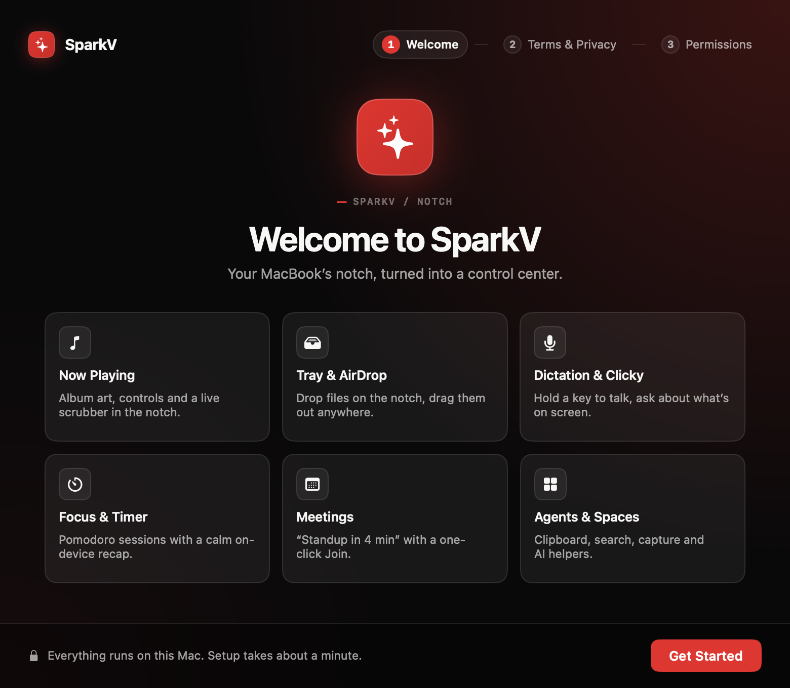

Open it again any time from Agents hub › Setup or gear menu › Permissions & Setup.
| Permission | Used by |
|---|---|
| Accessibility | Dictation and Clicky hotkeys, typing/pasting text, clipboard shortcuts, Reply Drafter, notification previews, media keys, replacing the system volume HUD |
| Screen Recording | Ask Screen, Clicky, Quick Capture, Copy Text, screen recording, meeting system audio |
| Camera | Mirror, Face Unlock, Screen Distance |
| Microphone + Speech Recognition | Dictation, Clicky questions, meeting recording |
| Calendars | Today meetings, Join button, meeting titles |
| Notifications | Timer and Focus chimes, Job Agent reminders |
| Bluetooth | AirPods battery |
| Downloads folder | Downloads watcher |
| Automation (Safari, Chrome, Mail) | Quick Capture of web pages, Spaces "Save Current Web Page / Selected Mail", Job Agent page capture |
4. Use it
Move the pointer onto the notch: the drawer opens. Move away: it closes after half a second. Drag a file onto the notch to drop it in the Tray.
Shortcuts cheat sheet
| Shortcut | What it does | Feature |
|---|---|---|
| Hover the notch | Open the drawer | Everywhere |
| Hold fn (or Right Option) | Talk, release to type the text where the cursor is | Dictation |
| Double-tap fn | Hands-free dictation (tap fn again to stop) | Dictation |
| ⌃⌘V / ⌃⌘C | Paste / copy the last dictation | Dictation |
| Hold ⌃⌥ | Ask Clicky about the screen out loud, release to send | Clicky |
| ⌥Space | Universal Search panel | Search |
| ⌃⌥S | Ask about a screen region (Space picks a window, Esc cancels) | Ask Screen |
| ⌃⌥T | Copy the text in any screen region (OCR) | Copy Text |
| ⌃⌥C | Quick Capture: selection, web page or screenshot into a Space | Quick Capture |
| ⌃⌥R | Draft a reply in the focused message box | Reply Drafter |
| ⌃⌥⇧R | Start / stop screen recording | Screen recording |
| ⌃⌥J | Join the next calendar meeting | Today |
| ⌃⌥1 … ⌃⌥5 | Turn the first five Modes on or off | Modes |
| ⌘⇧V | Clipboard stack at the text cursor (↑↓, ↩, ⌘1–9, type to search) | Clipboard |
| Hold ⌘, tap 1–9, tap V | Paste that item from history (1 = newest) | Clipboard |
| fn + ⌃ on a job posting | Save the posting (again on the confirmation page marks it applied) | Job Agent |
Hotkeys that watch modifier keys (dictation, Clicky, ⌘+number+V, ⌘⇧V) need Accessibility. A hotkey already taken by another app is skipped and logged.
1. The drawer and header tabs
Screenshot: screenshots/01-home.png (full drawer with header)
Where: hover the notch. The header row sits beside the camera: places on the left, actions on the right.
| Icon (left) | Tab | Icon (right) | Action |
|---|---|---|---|
| House | Home | Moon | Focus (start/stop) |
| Four tiles | Widgets | Red record | Record meeting |
| Tray | Tray | 2x2 grid | Agents hub |
| Calendar | Today | Waveform | Flow (dictation) |
| Arrows | Converter | Cursor rays | Clicky |
| Stack | Spaces | Gear | Settings menu |
How to use: click an icon to switch the drawer page. The drawer remembers the last tab. Dragging a file over any tab flips to the Tray (Converter, Spaces and File Drop keep their own drop targets).
Who it is for: every SparkV user.
Permissions: none.
Status: Verified headless. All 21 drawer pages render inside the real NotchNookLayoutView with the header.
2. Home: media, shortcut capsules and camera mirror
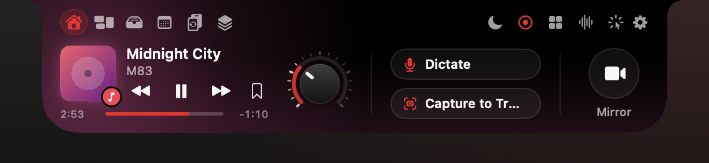
Where: header › House (Home).
How to use
- Media: album art with a colour glow, title and artist, previous / play-pause / next, a live scrubber (drag to seek, elapsed and remaining time) and a bookmark button that saves a moment in the track with a note. Works with any app that reports Now Playing (Music, Spotify, Safari, Chrome, podcasts).
- Volume knob: turn it with a drag or the scroll wheel.
- Shortcut capsules (2): default Dictate and Capture to Tray. Right-click a capsule (or gear › Button 1/2) to assign a built-in action or any shortcut from the Shortcuts app.
SHORTCUTS.mdhas ten ready-made recipes. - Mirror: click the camera circle to see yourself before a call; it turns off when you leave Home.
Who it is for: anyone who listens to music or joins video calls; power users who want one-click Shortcuts.
Permissions: Camera (mirror). Now Playing needs none on macOS 15.4+ (SparkV reads it through Apple's perl). Shortcuts that use scripts need "Allow Running Scripts" in Shortcuts.
Status: Needs a live check: the render proves the layout, scrubber, bookmark button and glow; real Now Playing data, the camera and running a Shortcut need the running app.
3. Widgets
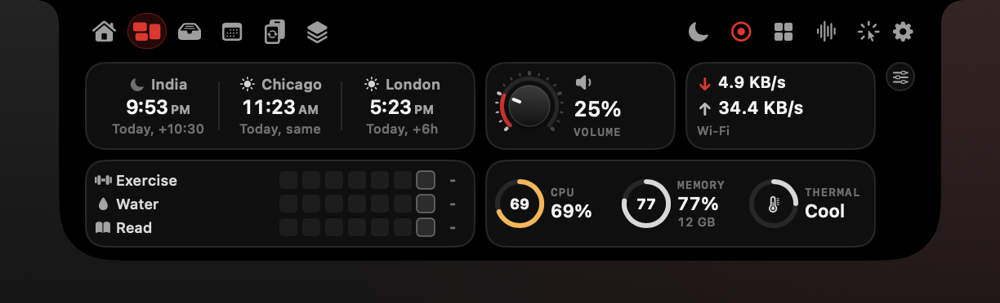
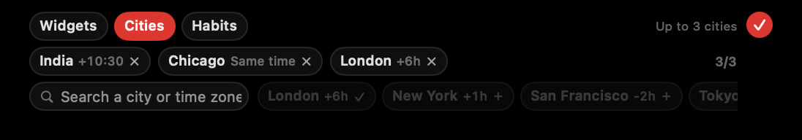
Where: header › Widgets (second icon), or Agents hub › Widgets.
How to use
- World clocks: India, Chicago and London by default, each with day/night, "Today/Tomorrow" and the offset from your time. To change them: right-click the clocks › Choose Cities…, or click the sliders button at the right edge of the widgets page › Cities. Remove a city with ×, type in Search a city or time zone (for example "Tokyo" or "New York") and click it to add, reorder with the arrows. Up to 3 cities; the choice is saved.
- Volume knob: system output volume with a live level ring.
- Habits: tick today's square for Exercise, Water, Read (edit the list under Habits, up to 6).
- CPU / Memory / Thermal gauges and Network down/up speed. They sample only while visible.
- Widgets section of the editor: choose which widgets show and their order.
Who it is for: remote teams across time zones, anyone who wants system stats at a glance.
Permissions: none.
Status: Verified headless. Rendered with the real defaults (India +10:30, Chicago, London +6h from Chicago time) and the city editor; widget tests re-run (see summary).
4. Tray, Tray AI and AirDrop

Where: header › Tray, or drag any file, image, link or text onto the notch.
How to use
- Drop files on the notch (or click Paste / Capture in the tray toolbar). Screenshots are copied in; other files stay where they are.
- Drag an item out into any app. Shift-drop keeps the drawer open. Cmd-click selects several.
- AirDrop: drop files on the AirDrop tile at the right.
- Tray AI (sparkles button, "Ask AI" / "Compare with AI"): What is this?, Explain, Summarize, Copy Text (OCR), Improve writing, Check spelling, List items, Translate, Web search, Receipt to JSON, Compare designs, Add to Calendar, or a custom question. Runs on device (Apple Intelligence); Groq is used only if you allow it.
Who it is for: designers, writers, anyone moving files between apps; people who screenshot a lot.
Permissions: Screen Recording (Capture), none for drag and drop.
Status: Needs a live check: the shelf renders with a PNG, JPG, PDF, DOCX and a link; drag in/out and AirDrop need a real drag session.
5. Today: calendar peek, Join and timer

Where: header › Today. A meeting also appears under the notch 10 minutes before it starts ("in 4 min" with Join).
How to use
- Meetings for the next hours with Join (Zoom, Meet, Teams, Webex links are detected) and Notes (starts recording that meeting with notes).
- ⌃⌥J joins the next meeting from anywhere.
- Timer: Pomodoro (focus/break rounds, shown "FOCUS 1/4") or a plain countdown; pause, reset, skip, list of presets.
Who it is for: people with back-to-back meetings.
Permissions: Calendars (click Connect Calendar the first time), Notifications for the chime.
Status: Needs a live check: the render shows three sample meetings with Join buttons and a running Pomodoro; reading your calendar needs Calendars access in the running app.
6. Converter

Where: header › Converter (arrows icon). Drop a file on the page.
How to use: drop a PDF, image, document, spreadsheet or slides, then click a format: Word, JPG, PNG, TXT, Compress, Split, Extract, Remove pages, Rotate, page Numbers, Watermark, Protect, Unlock, Repair, OCR, Merge (several PDFs), Images to PDF, Resize. Results appear in the box underneath, ready to drag anywhere or add to the Tray. The sliders button holds options (quality, page ranges, password).
Who it is for: students, office workers, anyone who uses iLovePDF-style tools; works offline.
Permissions: none.
Status: Verified headless. Rendered with a 3-page PDF and the full format row; converter harness passed in the earlier validation round.
7. Spaces
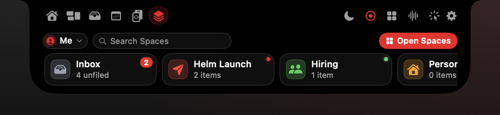

Where: header › Spaces (stack icon); Open Spaces for the full window; gear › Spaces.
How to use
- Create a Space per client, project or team (New Space), with keywords, people, domains and apps.
- SparkV files meetings, notes, dictations, screenshots, web pages, mail and clipboard items into the right Space automatically (above the auto-file threshold) or leaves them in the Inbox with a suggestion.
- Each Space keeps a Memory summary; Ask answers questions from the Space's items with citations.
- Personas ("Me") keep separate sets of Spaces; Spaces can be exported and shared.
Who it is for: agencies and consultants with several clients, founders, researchers.
Permissions: Automation (Safari/Chrome/Mail) only for "Save Current Web Page" and "Save Selected Mail".
Status: Verified headless. Drawer and window rendered with three Spaces, filed items and extracted entities (dates, people, domains).
8. Agents hub

Where: header › 2x2 grid icon.
Tiles (row by row)
| Row | Tiles |
|---|---|
| 1 | Search · Focus · Modes · Capture · Copy Text · Reply · Ask Screen · Prompt |
| 2 | Clipboard · Paste Stack · Record · Widgets · File Drop · Downloads · Translate · UI Audit |
| 3 | Jobs · Browser · Distance · Canvas · Setup · C capsule |
A tile either opens its page in the drawer (Reply, Ask Screen, Prompt, Clipboard, Widgets, File Drop, Downloads, UI Audit, Jobs, Browser, Distance, Focus), runs at once (Search, Capture, Copy Text, Paste Stack, Record, Translate on/off, Canvas, Setup) or shows a menu (Modes). The C capsule pastes what is on the clipboard (⌥-click copies, hold or right-click for history). Hover a tile for its shortcut.
Who it is for: everyone; this is the launcher for every agent.
Permissions: per agent (below).
Status: Verified headless. All 22 cells render in the 8x3 grid and every tile's action is wired in AgentsHubView.
9. Dictation and Flow


Where: hold fn anywhere; header › waveform (Flow) for history; gear › Dictation for settings.
How to use
- Put the cursor in any text field, hold fn, speak, release. The text is cleaned up (punctuation, filler words removed, lists formatted) and typed in. Double-tap fn for hands-free.
- ⌃⌘V pastes, ⌃⌘C copies the last dictation.
- Flow tab: History (every dictation, with app and time), Notes (dictate a note), Words (custom dictionary: names and terms it should spell right) and snippets.
- Gear › Dictation: choose the key (fn, Right Option, Off) and AI formatting.
Who it is for: writers, founders, anyone who types a lot; people with RSI.
Permissions: Microphone, Speech Recognition, Accessibility (typing and the fn key).
Status: Needs a live check: speech recognition and the fn key need the running app. Views render with sample history and the live band.
10. Clicky: ask about your screen
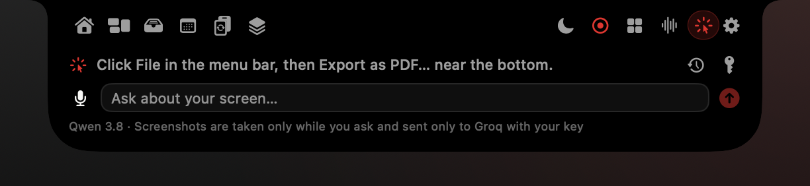

Where: hold ⌃⌥ and speak, or header › cursor icon and type a question.
How to use: ask "Where do I change the export format?" while looking at any app. Clicky captures the display under your mouse at that moment, answers out loud and in the band under the notch, and flies a pointer to the spot on screen. History icon shows earlier answers; the key icon adds an optional Groq API key for image-aware answers (without a key it reads the screen text on device).
It works in any app and on any screen, not only in a browser. It points and explains; it does not click or type for you.
Who it is for: people learning new software, support teams, older relatives.
Permissions: Accessibility (hold-to-ask), Screen Recording, Microphone, Speech Recognition.
Status: Needs a live check: screen capture and the ⌃⌥ hold need the running app.
11. Gear menu (settings)
Where: header › gear icon (right end). It is a system menu, so it cannot be rendered offscreen; its items, from the code:
- Button 1 / Button 2: assign the Home capsules.
- Meetings: Record / Stop, Meeting Notes…, meeting heads-up options, Suggest Answers to Questions, Allow Meeting Notes to Use My Groq Key, Live Translation (on/off, language, caption window).
- Live Activities: Now Playing beside the notch, Volume & Brightness, Hide macOS volume pop-up, Battery & AirPods (Enable AirPods Battery…), Timer, Meetings, Notifications, Hide Message Text.
- Downloads: Watch Downloads Folder, Show Progress Under the Notch, Suggest Folders with Apple Intelligence, Sorting Rules…
- Dictation: Hold to Talk key, AI Formatting, Paste/Copy Last Dictation.
- Modes, Focus (start, settings, Do Not Disturb, distraction reminders, recap, Screen Glow, shake, confetti, preview).
- Clipboard: Open Clipboard Stack ⌘⇧V, ⌘+Number+V, ⌘⇧V toggle.
- Screen Tools: Copy Text and Screen Recording options.
- Agents: UI Audit…, Job Agent…, Capture Job Page, Ask About Screen…, Pick a Window…, Prompt Refiner…, Browser Flows…, Draft Reply… with Reply Drafter options, Flow Canvas…, Send Tray to Flow Canvas, Allow Flow Canvas to Use My Groq Key.
- Screen Distance, Spaces (Open, Save Current Web Page, Save Selected Mail, Quick Capture), Quick Capture, Search, File Drop settings.
- Permissions & Setup, Set Up Face Unlock… / Face Unlock Settings…, Launch at Login, Quit SparkV.
Status: Verified headless (wiring read from NotchNookLayoutView.swift; not rendered).
12. Universal Search

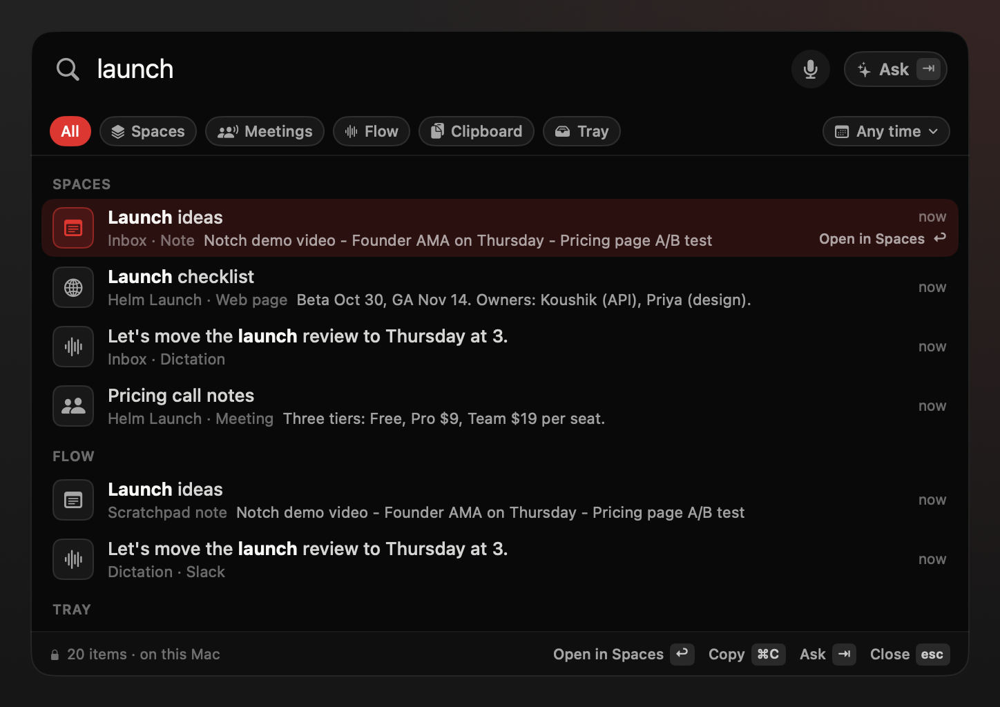
Where: ⌥Space anywhere, or Agents hub › Search.
How to use: type a word. Results come from Spaces, meetings, Flow notes and dictations, clipboard history and the Tray, grouped by source, with filters (All, Spaces, Meetings, Flow, Clipboard, Tray, Any time). ↩ opens, ⌘↩ opens the link, ⌘C copies. Press Tab (Ask) to get an answer written from your own items with citations. The mic button searches by voice.
Who it is for: anyone who forgets where they saw something.
Permissions: none (Microphone for voice).
Status: Verified headless. The search engine ran live on the sample data: "launch" returned 21 items across Spaces, Flow and Tray.
13. Focus and screen effects

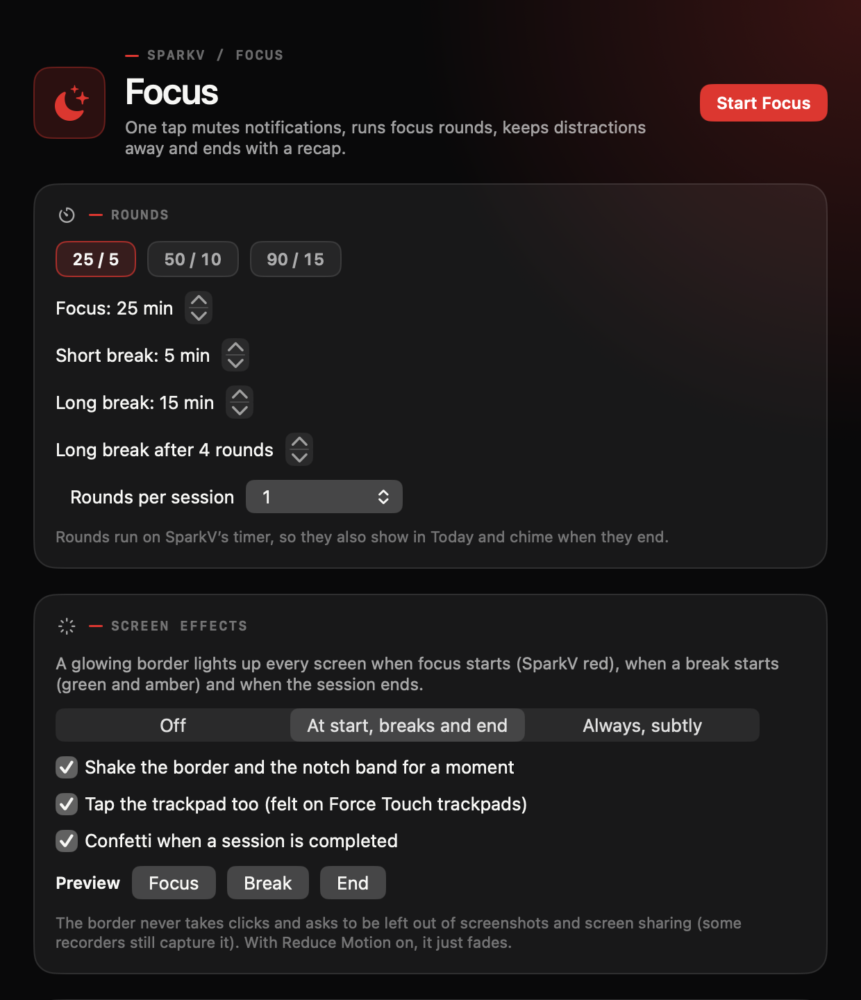
Where: header › moon icon (start/stop), Agents hub › Focus, gear › Focus.
How to use: pick a rhythm (25/5, 50/10, 90/15) and rounds, click Start Focus. SparkV turns on Do Not Disturb, runs the rounds on its timer, reminds you when you open a distracting app, and writes a recap at the end. Screen Effects: a glowing border around every screen at the start, at breaks and at the end (or always, subtly), with an optional shake, trackpad tap and confetti. Preview them with Focus / Break / End.
Who it is for: students, developers, writers.
Permissions: Notifications (chime). Do Not Disturb is switched through two Shortcuts named in Focus Settings › Do Not Disturb.
Status: Needs a live check: the glow is a screen-level overlay window and Do Not Disturb changes a system setting, so neither was triggered headlessly. Pages render.
14. Modes
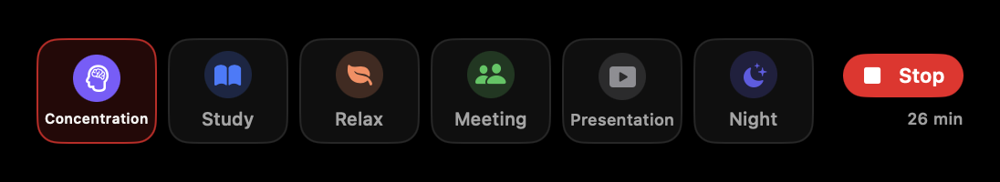
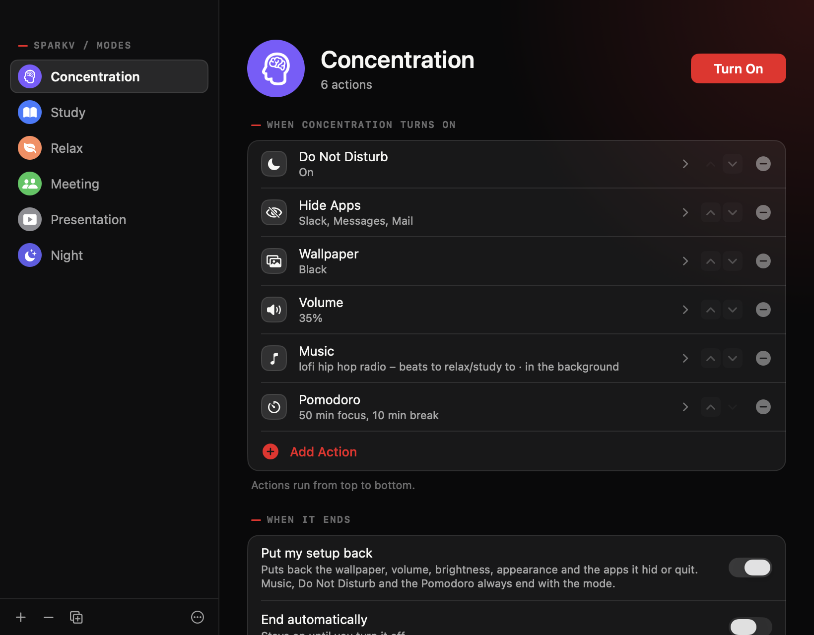
Where: Agents hub › Modes (menu), gear › Modes, ⌃⌥1–5.
How to use: one click turns on a whole setup: Concentration, Study, Relax, Meeting, Presentation, Night. Each mode is a list of actions (Do Not Disturb, hide or quit apps, wallpaper, volume, brightness, appearance, music, Pomodoro). Edit Modes… opens the editor to add, reorder or remove actions. Turning a mode off puts your setup back (wallpaper, volume, apps).
Who it is for: people who switch between deep work, meetings and presenting.
Permissions: Accessibility/Automation for hiding apps; Shortcuts for Do Not Disturb.
Status: Needs a live check: modes change system settings (wallpaper, volume, DND), so they were not run headlessly. Mode engine tests passed in the earlier round; views render.
15. Quick Capture and screenshot-to-clipboard
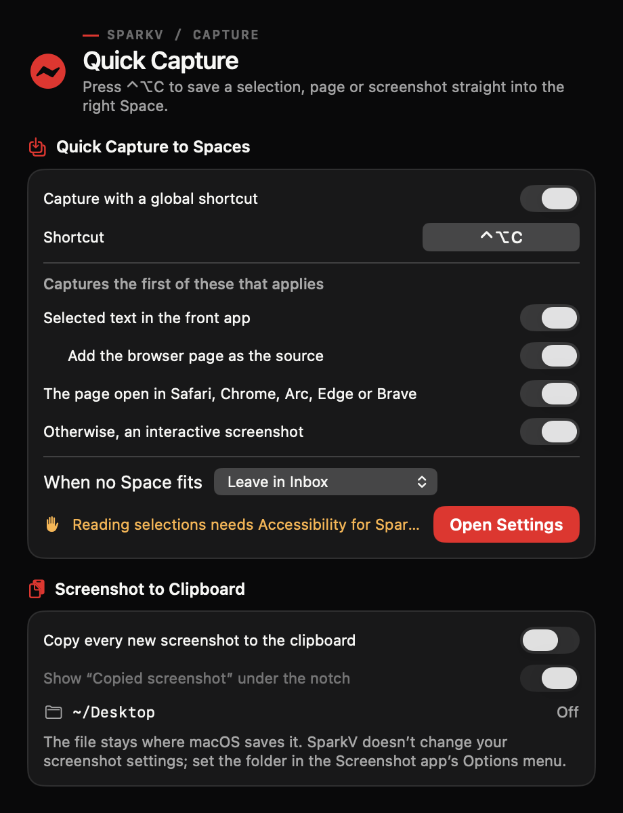
Where: ⌃⌥C, Agents hub › Capture, gear › Quick Capture.
How to use
- Quick Capture: press ⌃⌥C. SparkV saves the first thing that applies: the selected text (with the browser page as source), else the open web page, else an interactive screenshot, straight into the best-matching Space. A small toast lets you change the Space or undo.
- Screenshot to clipboard: turn on "Copy every new screenshot to the clipboard". Every screenshot macOS saves (⇧⌘3/4/5) is also put on the clipboard as an image, with a "Copied screenshot" band. Your screenshot settings are not changed.
Who it is for: researchers, students, support teams.
Permissions: Accessibility (selected text), Automation (browser page), Screen Recording (screenshot), Desktop folder access (screenshot watcher).
Status: Needs a live check: capturing needs the running app and permissions.
16. Copy Text
Where: ⌃⌥T, Agents hub › Copy Text, Ask Screen page › Copy text.
How to use: press ⌃⌥T, drag over any text on screen (an image, a video, a locked PDF, a slide in a call). The text is recognized on device and copied; the band shows how many lines.
Who it is for: everyone.
Permissions: Screen Recording.
Status: Verified headless for the recognition logic (screen-tools test suite re-run, see summary); the capture itself needs a live check.
17. Reply Drafter
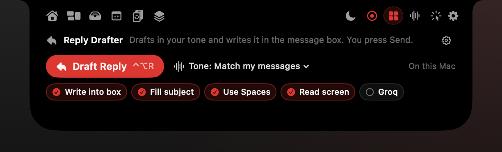
Where: ⌃⌥R in Mail, Messages, Slack, WhatsApp, Gmail and other apps; Agents hub › Reply.
How to use: open a conversation and press ⌃⌥R. SparkV reads the thread, drafts a reply in your tone (learned from your messages) and writes it into the message box. You review and press Send. Chips: write into box, fill an empty subject, use Spaces as context, read the window when text is hidden, Groq. Tone & Name… sets your name and style.
Who it is for: sales, founders, support, recruiters.
Permissions: Accessibility (read and write the message box); Screen Recording only for the "read screen" fallback.
Status: Needs a live check (reads other apps). The page now uses the taller drawer, so it no longer overflows.
18. Ask Screen
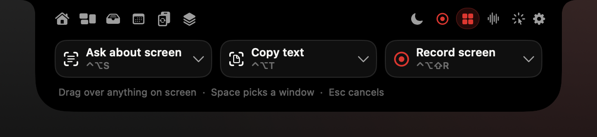
Where: ⌃⌥S, Agents hub › Ask Screen, gear › Agents › Ask About Screen / Pick a Window.
How to use: press ⌃⌥S, drag over part of the screen (Space picks a window). A panel shows the capture with quick actions (explain, summarize, translate, copy text, detected links and dates) and a question box with streamed answers; Save to Tray keeps it.
Who it is for: anyone reading charts, errors, foreign text or dense pages.
Permissions: Screen Recording.
Status: Needs a live check: the results panel needs a real capture, so only the page renders.
19. Prompt Refiner
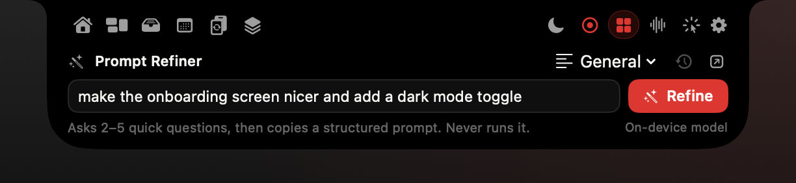
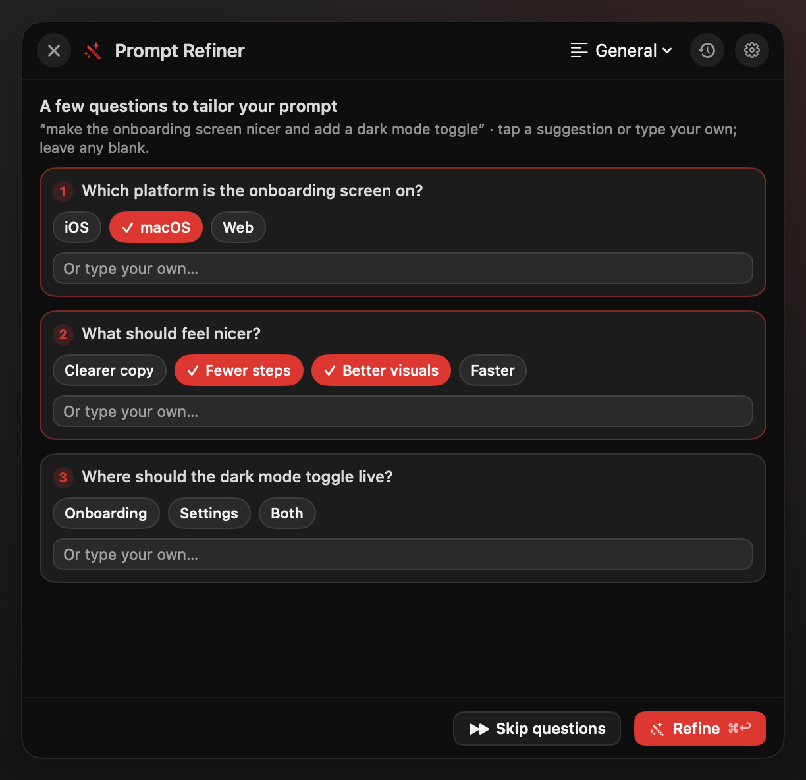
Where: Agents hub › Prompt, gear › Agents › Prompt Refiner….
How to use: type a rough request ("write a cold email for our notch app"), pick the target (ChatGPT, Claude Code, Gemini, an image model, or General), click Refine. Answer 2–5 quick questions with chips or your own words (or skip), then copy a structured prompt. It never runs the prompt itself. History keeps past prompts.
Who it is for: people who use AI tools daily and want better results.
Permissions: none (Microphone for dictating the request).
Status: Verified headless (on-device engine produced the questions shown; harness passed in the earlier round).
20. Clipboard history, C button and paste stack
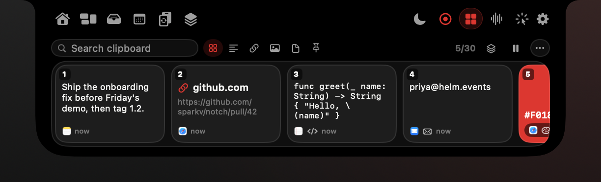

Where: Agents hub › Clipboard (page), Agents hub › Paste Stack or ⌘⇧V (stack at the cursor), the C capsule, gear › Clipboard.
How to use
- Clipboard history is off until you turn it on (privacy): Clipboard page › Turn On, or right-click the C capsule › Turn On Clipboard History.
- Every copy is kept (text, links, code, colours, emails, images, files) with smart badges; passwords and private copies are skipped.
- ⌘⇧V opens the stack where you type: ↑↓ and ↩ paste, ⌘1–9 paste by number, space previews, P pins.
- Hold ⌘, tap a number, tap V pastes that item directly (1 = newest).
- C capsule: click pastes the current clipboard, ⌥-click copies, hold for history.
Who it is for: developers, writers, anyone who copies and pastes a lot.
Permissions: Accessibility (paste and the ⌘ shortcuts).
Status: Verified headless for history and stack logic (stack harness re-run, see summary); the global ⌘ shortcuts need a live check with Accessibility.
21. Screen recording

Where: ⌃⌥⇧R, Agents hub › Record, gear › Screen Tools.
How to use: press ⌃⌥⇧R, drag an area, click a window, or press Return for the whole display. A red band shows the elapsed time; press ⌃⌥⇧R again (or the Stop tile) to save the movie to the Desktop, with a result card to drag it or add it to the Tray.
Who it is for: support, QA, product demos, tutorials.
Permissions: Screen Recording (Microphone if you record your voice).
Status: Verified headless for the recorder state machine (screen-tools suite with a fake engine); real capture needs a live check.
22. File Drop
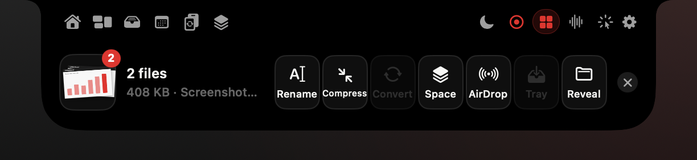
Where: start dragging files near the notch (a shelf appears only during the drag), or Agents hub › File Drop.
How to use: drop files, then pick an action: Rename (AI suggests a name from the content), Compress (zip or smaller images), Convert (opens the Converter), Space, AirDrop, Tray, Reveal. Drag the result anywhere.
Who it is for: anyone tidying downloads, sending files, sharing screenshots.
Permissions: none (Accessibility helps detect drags).
Status: Needs a live check: drag detection needs real drags; the strip renders with two files.
23. Downloads
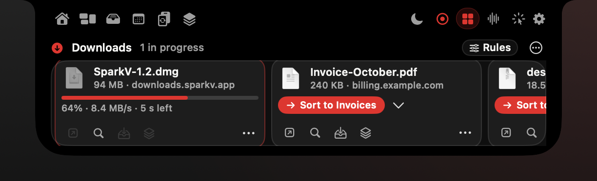
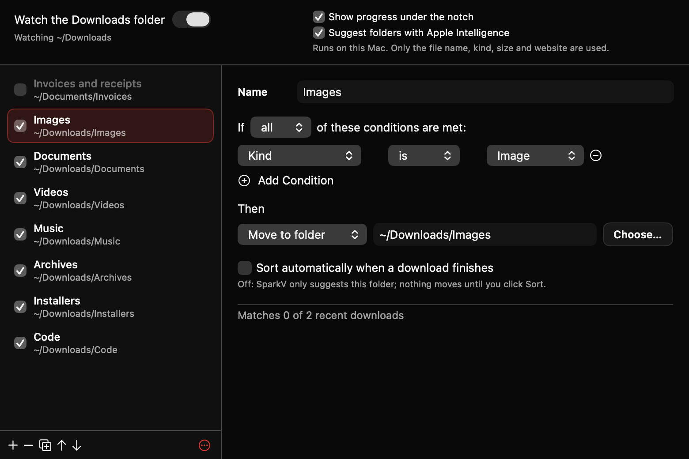
Where: Agents hub › Downloads, gear › Downloads.
How to use: turn on Watch Downloads Folder. Downloads from Safari, Chrome, Edge, Brave, Arc and Firefox show progress, speed and time left under the notch. Finished files get one-click Sort (by rules or an Apple Intelligence folder suggestion), open, Quick Look, Tray and Space buttons. Rules edits the sorting rules (Images, Documents, Videos, Music, Archives, Installers, Code, Invoices…).
Who it is for: everyone with a messy Downloads folder.
Permissions: Downloads folder access.
Status: Needs a live check (watches a real folder). Drawer and rules render.
24. Live Translation
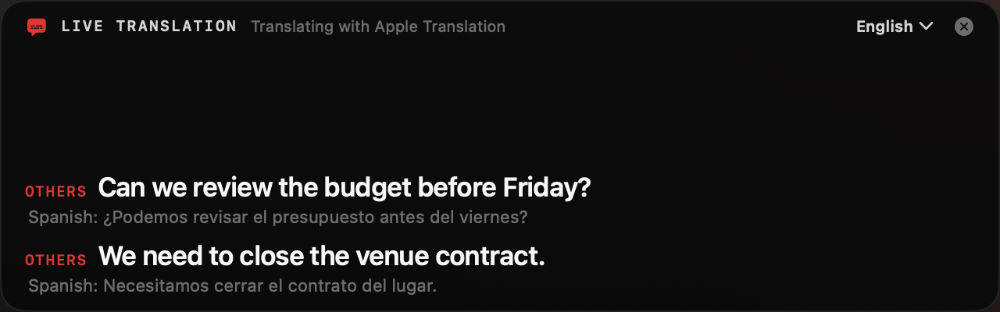
Where: Agents hub › Translate (turns it on), right-click the tile or gear › Meetings › Live Translation for the language and the caption window.
How to use: turn it on, choose the language you want to read (English by default), then record a meeting. Other people's speech is translated live into captions (with the original underneath); your own speech can be translated too. Apple Translation runs on device after a one-time language download.
Who it is for: international teams, interviews, travel.
Permissions: Microphone, Screen Recording (meeting audio), Speech Recognition.
Status: Needs a live check (needs a recorded meeting). Caption window renders.
25. UI Audit (developer testing of websites)


Where: Agents hub › UI Audit, gear › Agents › UI Audit….
How to use
- Type your site's address (for example
http://localhost:3000or a staging URL) and choose a mode: UI audit, Forms only, Accessibility, Full frontend. - Click Start. SparkV opens a Chromium window and walks your site like a tester: crawls pages (max pages, depth), scrolls, fills and submits forms (only on local/test hosts unless you allow it), clicks buttons (never risky ones like Delete or Log out unless allowed), checks layout at 1440 px and 390 px, runs axe-core accessibility checks, walks the Tab order, and records console errors and failed requests. You can Take over the browser and Resume.
- Findings stream in by severity (Critical, High, Medium, Low) with the element, page, screenshot and steps to reproduce. Summarize writes a plain-English summary on device.
- Click P to copy a ready-to-paste fix prompt for Claude Code, Cursor or Copilot: every issue with selectors, Playwright locators, steps and acceptance checks. Open report shows the HTML report.
Who it is for: frontend developers, QA testers, agencies shipping client sites, founders checking a site before launch.
Permissions: none for SparkV. Requires Node.js (Homebrew node) and Playwright's Chromium in ~/Library/Caches/ms-playwright (npx playwright-core install chromium if missing).
Status: Verified headless, end to end. The screenshots come from a real run: SparkV's own UIAuditController audited the bundled planted-issue test site on 127.0.0.1 (6 pages, 69 findings: 3 critical, 15 high), the summary was written by Apple Intelligence on device, and the P button produced a 51,666-character fix prompt covering 60 issues. The runner's own self-test also passed 48/48 (all planted issues found, no POST sent to a non-test host, /logout and /account/delete never requested).
Scope: UI Audit tests websites in its own Chromium. It does not test native Mac apps.
26. Job Agent
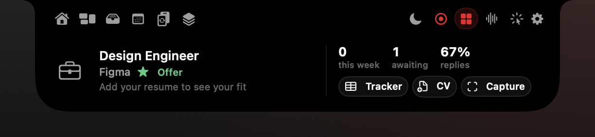
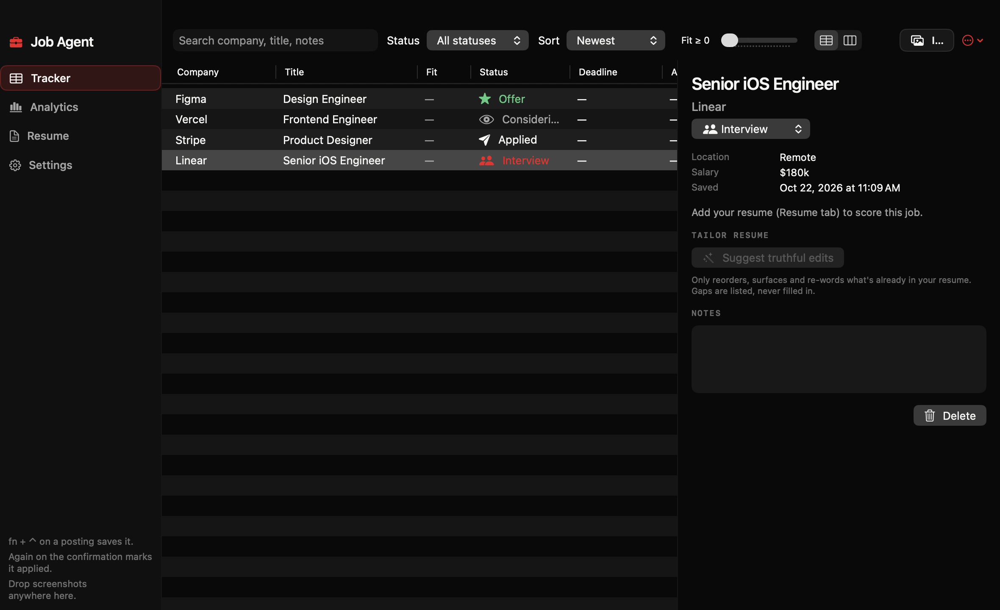
Where: Agents hub › Jobs, gear › Agents › Job Agent…, fn + ⌃ on a posting.
How to use: add your resume (PDF, DOCX, RTF or text) under Resume. On any job posting (LinkedIn, Greenhouse, Lever, Workday…) hold fn + ⌃: SparkV saves it and scores your fit (hard skills, experience, keywords, education, title) with matching and missing skills. Press fn + ⌃ again on the confirmation page to mark it applied. The window has a Tracker (table or board), Analytics, deadlines and truthful tailoring suggestions. Screenshots of postings can be dropped in.
Who it is for: job seekers, career switchers, recruiters tracking candidates.
Permissions: Screen Recording or Automation (to read the posting), Notifications (deadline reminders).
Status: Verified headless for parsing and scoring (fit 81% computed live from the sample resume and posting); capturing from a browser needs a live check.
27. Browser Flows
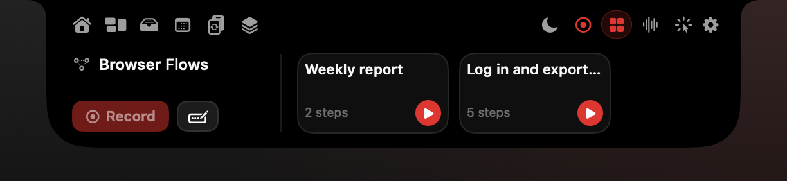

Where: Agents hub › Browser, gear › Agents › Browser Flows….
How to use: click Record, do a task once in the browser window (sign up, fill a form, download a report). SparkV records each step with several selector candidates; passwords become {{password}} and are asked at replay, never saved. Edit steps, turn values into variables, then Replay or Replay with Data… (one run per CSV row). If the site changes, self-healing selectors find the moved or renamed element.
Who it is for: operations, sales ops, QA, anyone repeating web chores.
Permissions: none for SparkV; Node.js and Playwright's Chromium (or "Use installed Google Chrome").
Status: Needs a live check. The recorder self-test was re-run twice: run 1 failed one replay ("v3", step 10 timed out at 4 s); run 2 passed that replay but the CSV-loop replay then hung past 400 s. The Mac was under heavy load (full disk, parallel builds), so this may be timing, but it is not a clean pass. Browser Flows drive their own Chromium only; they do not control other apps.
28. Screen Distance
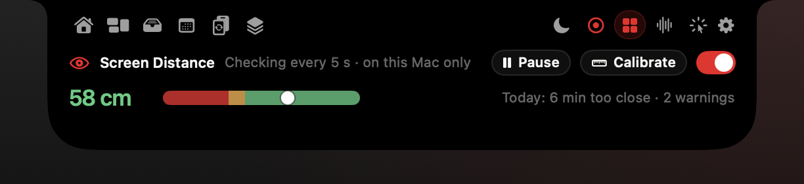
Where: Agents hub › Distance, gear › Screen Distance.
How to use: turn the switch on and click Calibrate once at a normal distance. If your face stays closer than 40 cm for a while, a full-screen notice asks you to move back; it continues when you do. Today's "too close" minutes and warnings are shown. Off by default.
Who it is for: children, students, anyone with eye strain.
Permissions: Camera.
Status: Needs a live check (camera). Distance math tests passed in the earlier round.
29. Flow Canvas

Where: Agents hub › Canvas, gear › Agents › Flow Canvas…, gear › Agents › Send Tray to Flow Canvas.
How to use: a whiteboard for AI workflows. Drop links, PDFs, screenshots and notes as cards, connect them to action cards (extract fields, compare, summarize, write report, chat with sources), click Run all. Or type what you want in "What do you want to do with these?" and Suggest steps builds the chain. Templates: Competitor pricing comparison, Summarize a PDF, Screenshots to notes, Research brief from links. Outputs export to Markdown/PDF/CSV, the Tray, Notes or a Space.
Who it is for: analysts, marketers, researchers, founders.
Permissions: none (Groq optional).
Status: Verified headless (template loads and lays out; window renders).
30. Onboarding and permissions
See Quick start, step 3. Where: first launch, Agents hub › Setup, gear › Permissions & Setup. The ring shows how many of the 12 permissions are allowed; each row has Allow… and a gear that opens the matching System Settings page.
Status: Verified headless (renders; statuses come from the system's own checks).
31. Meeting notes and live answers

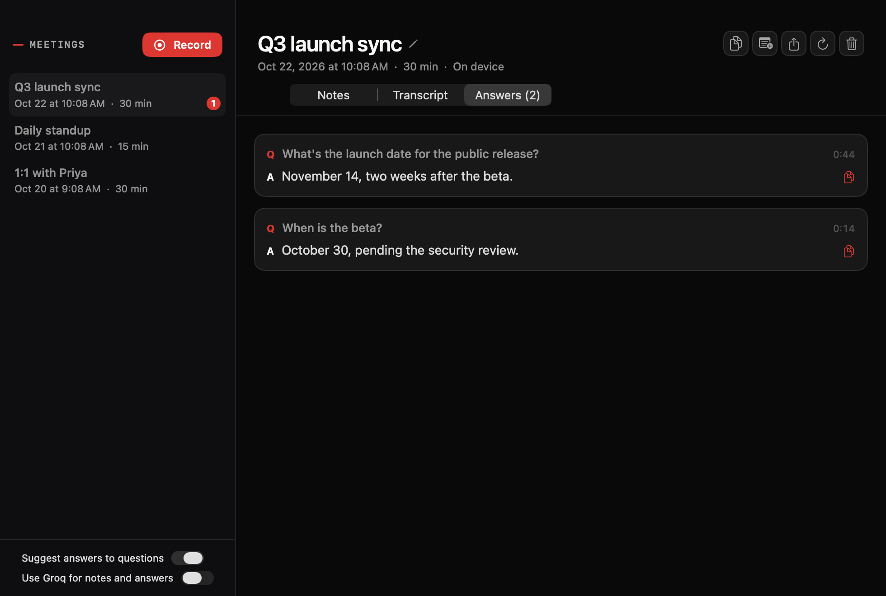
Where: header › red record button (one click), Today › Notes, gear › Meetings › Meeting Notes….
How to use
- Click record. SparkV records your microphone and the meeting's audio (no bot joins the call) and transcribes on device. The notepad opens for your own notes.
- Live answers: when someone asks you a question during the call ("Koushik, what's the status of the API migration?"), a suggested answer appears under the notch (turn on gear › Meetings › Suggest Answers to Questions).
- Click stop. You get Minutes, Key points, Decisions, your tasks with due days, other people's tasks, the transcript and the answers, all searchable and filed into Spaces. Export or copy as Markdown.
Who it is for: managers, consultants, founders, recruiters.
Permissions: Microphone, Screen Recording (system audio), Speech Recognition; Calendars for titles.
Status: Needs a live check (audio capture). Notes and answers render from saved meetings.
32. Live activities
| Activity | Screenshot |
|---|---|
| Volume and brightness HUD (replaces the macOS pop-up) |  |
| Battery charging, low battery | |
| AirPods connected with left/right/case battery |  |
| Notification preview (message text can be hidden) | |
| Compact wings: now playing art and level meter beside the camera | |
| Screen recording, Copy Text, screenshot copied, dictation, Clicky | see sections 21, 16, 15, 9, 10 |
Where: automatic while the drawer is closed; turn each on or off in gear › Live Activities.
How it works: each activity has a priority. Short alerts (volume, notifications) queue and show for their own time; longer ones (timer, meeting, recording) tuck into the compact wings after a 4-second peek. Hovering an activity opens the matching tab (a meeting opens Today with Join).
Who it is for: everyone.
Permissions: Accessibility (volume/brightness keys, notification banners), Bluetooth (AirPods).
Status: Needs a live check: key interception, banners and Bluetooth need the running app. The bands render; the activity queue was tested in the earlier round. In offscreen renders the compact wings sit higher than they should (see Known limits).
33. Face Unlock
Screenshot: none. The Face Unlock settings live inside the bundled GlanceKit module and read the login keychain, so they were not rendered offscreen.
Where: gear › Set Up Face Unlock… (later Face Unlock Settings…).
How to use: enroll your face, then unlock the Mac by looking at it; the notch shows the unlock animation. Liveness checks block photos.
Who it is for: anyone who wants Face ID-style unlock on a Mac.
Permissions: Camera, Accessibility; your login password is stored in the login keychain (this is why the stable signing identity matters).
Status: Needs a live check (camera and keychain).
Verification summary
Checks run on Oct 22, 2026 against the current sources (snapshot taken 07:04).
| Check | Result |
|---|---|
Full app (all Sources/*.swift plus the 22 Sources/Labs/* folders listed in build.sh) compiles with the Command Line Tools |
Pass, no errors |
Every drawer tab, hub tile, header icon and default hotkey is wired (read from NotchNookLayoutView, AgentsHubView, NotchWindowController) |
Pass |
| Offscreen renders of 50 views with sample data | 50 written, all reviewed |
UI Audit runner self-test (Vendor/ui-audit/test/run-test.mjs) |
48/48 pass |
| UI Audit end to end through SparkV's controller, plus the P fix prompt | Pass (6 pages, 69 findings, 51,666-char prompt) |
| Universal Search on sample data | Pass (21 results for "launch") |
Browser Flows recorder self-test (Vendor/browser-recorder/test/test.mjs) |
Not clean: run 1 failed one replay, run 2 hung in the CSV loop |
| Widgets harness (world clocks, time zones, knob, habits, gauges, network), rebuilt from current sources | 29,283 checks pass, 0 fail |
| Copy Text OCR + screen recorder harness, rebuilt against the current app sources | 63 pass, 0 fail |
| Clipboard history + paste stack harness (⌘⇧V, ⌘+number+V logic), rebuilt against the current app sources | 195 pass, 0 fail |
Harnesses from the earlier validation rounds (converter, Spaces, Prompt Refiner, Job Agent, meetings, dictation, Clicky, live activities, Focus, Modes, Downloads, File Drop, Reply Drafter, Universal Search, Live Translation, Quick Capture) were not all re-run this time; their features are marked from today's build, wiring and render checks.
Known limits and open problems
- Signing: the app is signed with the local "NotchIsland Developer" identity. That is enough for this Mac; selling needs an Apple Developer ID and notarization (see the business plan).
- Browser Flows self-test is not reliable under load (see section 27).
- Drawer heights: the Reply Drafter page now uses the tall drawer and the Agents hub has a few points of extra room; both overflowed slightly in the first renders.
- Compact wings position: in offscreen renders the closed-island wing content (timer, now playing) draws near the top edge and is partly clipped. This may be an artefact of rendering without the real notch window; check it in the running app.
- "Control any app" is not a feature. Clicky understands any app on any screen and points at things, Dictation and Reply Drafter type into any app, and Browser Flows / UI Audit drive their own Chromium. Nothing clicks or types through arbitrary apps on its own.
- Clipboard history is off by default and must be turned on once.
- Not rendered offscreen: the gear menu (system menu), Face Unlock settings, Ask Screen's results panel (needs a real capture), the Focus screen glow and the Screen Distance full-screen notice (screen-level overlays).
- AI: on-device Apple Intelligence is used by default. Groq is optional per feature and needs your own API key; nothing uses it unless you turn it on.
- Hardware: designed for the 14/16-inch MacBook Pro notch; on other screens the island sits in the menu bar.
Part 2
Business plan
Last researched: 22 October 2026. Prices of other products come from the sources linked inline. Many are third-party listings, so check each vendor's own page before you quote them publicly. INR prices assume about ₹88 per US$1 and are set lower than a straight conversion, matched to what people in India usually pay.
1. Summary
| Question | Answer |
|---|---|
| What we sell | A direct-download, notarized Mac app (macOS 15+, com.sparkv.app). Buyers pay, get a license key by email, download a DMG and start using it. |
| Where we sell | Our own website, with a merchant of record handling checkout, tax and license keys. Lemon Squeezy is the recommended choice. Paddle with Keygen is the alternative. Not the Mac App Store (see section 5). |
| Recommended pricing | Free (notch basics), Pro at $39 one-time (₹1,499), Team at $8 per seat per month, billed yearly (₹499). Launch week: Pro at $29 (₹999). 14-day full Pro trial, no card needed. 50% student discount. |
| AI cost to us | $0. AI runs on-device (Apple Intelligence, Vision, Speech). Groq is optional and uses the buyer's own key. |
| Fixed costs to start | Apple Developer Program, $99 a year (about ₹8,700 in India, forum report). A domain and static hosting for the site and the Sparkle update feed. Lemon Squeezy has no monthly fee. |
| Blockers to fix before selling | (1) Face Unlock's ArcFace weights are licensed for non-commercial use only. (2) The app is signed with a self-signed identity, which only works for local development. It needs a Developer ID certificate and notarization. (3) There is no licensing code in the app yet. (4) UI Audit and Browser Flows need Node.js installed on the buyer's Mac. |
2. What SparkV actually contains (from the code)
This list comes from Sources/, Sources/Labs/*, the Tab enum in NotchState.swift and the tiles in AgentsHubView.swift. These names are used in every pricing table below.
| Group | Feature (code location) |
|---|---|
| Notch core | Media for any app with scrubber, artwork glow and bookmarks (MediaEngine, Labs/Media). Volume and brightness HUD (HUDController, SystemKeyInterceptor). Battery and power band (PowerMonitor). Notification mirror (NotificationMonitor). Camera mirror. AirDrop target. Tray, 5 items (TrayView). Two action capsules that run Shortcuts (MacroController, ShortcutRunner). Timer and Pomodoro, plus Today with upcoming meetings (TimerController, TodayView). |
| Widgets | World Clock with changeable time zones, System Gauges, Network Speed, Volume Knob, Habits (Labs/Widgets) |
| Wellbeing | Focus mode with app blocker, muter, edge glow and summary (Labs/Focus). Modes such as Concentration, Study, Relax, Meeting, Presentation and Night (Labs/Modes). Screen Distance (Labs/ScreenDistance). |
| Productivity | Clipboard history and Paste Stack (Labs/Clipboard). Converter, for on-device PDF, image and document conversion (Labs/Converter). File Drop actions (Labs/FileDropActions). Downloads watcher, sorter and rules (Labs/Downloads). Quick Capture to Spaces, and Screenshot to Clipboard (Labs/QuickCapture). Copy Text OCR (Labs/ScreenRegion). Screen Recorder (Labs/ScreenRecorder). Universal Search (Labs/UniversalSearch). Spaces, a knowledge base you can share as .sparkvspace packages (Labs/Spaces). Flow history and Notes (FlowStore). |
| AI assistants | Dictation with hold-fn and AI formatting (DictationController, DictationFormatter). Clicky voice and screen assistant, which points at what to click (Clicky*, VisionClient). Ask Screen (Labs/ScreenRegion). Reply Drafter, ⌃⌥R (Labs/ReplyDrafter). Prompt Refiner (Labs/PromptRefiner). Tray AI actions, OCR and calendar (TrayAI*). Job Search Agent (Labs/JobAgent). |
| Meetings | Meeting recorder, transcriber, summarizer, notes window and capsule (Meeting*). Live Translation band and captions (Labs/LiveTranslation). |
| Developer tools | UI Audit, which runs Playwright and axe-core against your own site (Labs/UIAudit, Vendor/ui-audit). Browser Flows, which records and replays browser tasks (Labs/BrowserRecorder, Vendor/browser-recorder). Flow Canvas, a visual automation planner and runner (Labs/FlowCanvas). |
| Security | Face Unlock (Vendor/glance). Not sellable as it is. See section 8. |
| Setup | Onboarding and the permissions window (Labs/Onboarding) |
3. Comparable products and prices
| Product | What it is | Price | Source |
|---|---|---|---|
| NotchNook | Notch hub (media, tray) | $25 one-time or $3 a month, 2-day trial. Sold direct and through Setapp. Not on the App Store because it uses private APIs. | iMore, Lowyat, Smartworld |
| boring.notch | Open-source notch app | Free, GPL-3.0, about 11.1k GitHub stars. Not notarized ("unidentified developer" warning). | GitHub, Korben |
| Alcove | Dynamic Island for the Mac | About $13.99 one-time, 72-hour trial | appgefahren, SlashGear |
| Raycast Pro | Launcher with AI | $10 a month, or $8 a month billed yearly. 14-day trial. Pro+ is $20 a month. | tech-insider, Raycast blog |
| CleanShot X | Screenshots and recording | $29 one-time with 1 year of updates, then $19 a year (optional). Cloud Pro is $8–10 a month. | toolradar, TrustRadius |
| Wispr Flow | AI dictation | Pro is $15 a month, or $144 a year. Teams from $10 per user per month. Students pay $6 a month. | getvoibe, spokenly |
| Granola | AI meeting notes | Business is $14 per user per month. Enterprise from $35. | Granola, Read AI |
| Paste | Clipboard manager | $3.99 a month, $29.99 a year, or $89.99 lifetime | App Store |
| Setapp | App subscription bundle | Mac plan about $14.99 a month, or about $8.99 a month billed yearly (prices rose June 2026) | PricingSaaS, Setapp |
What this means for us: SparkV does the work of a notch app, a clipboard manager, a dictation app, a meeting recorder and a screenshot tool in one app. Paying for those separately costs a buyer well over $300 a year. Pure notch apps sell for $14–25 one-time, so a $39 one-time Pro is easy to justify, and it is still cheaper than two months of Wispr Flow and Granola together. Because we pay nothing for AI, we can charge once instead of monthly, and that is a selling point against Wispr, Granola and Raycast.
4. Payment and licensing platforms
A merchant of record (MoR) is the legal seller. It collects and pays VAT, GST and US sales tax around the world, which a solo Indian seller should not try to do alone.
| Platform | Fee | MoR? | License keys | Notes | Source |
|---|---|---|---|---|---|
| Lemon Squeezy (owned by Stripe) | 5% + 50¢. About +1.5% on non-US orders and +0.5% on subscriptions. | Yes | Built in, with a License API to activate, validate and deactivate keys | Built-in affiliates and file delivery. Payouts to US banks are free, international payouts cost 1%. | Dodo review, fungies, LS License API |
| Paddle | 5% + 50¢ | Yes | Not a full licensing system. Pair it with Keygen. | Mature, used by many Mac indie apps | Dodo, Spendflo |
| Gumroad | 10% + 50¢ (30% through Discover), plus card fees. Keeps its fee on refunds. | Yes, since January 2025 | Basic keys | Easiest to start, most expensive | schoolmaker, ecomm.design |
| FastSpring | Quote-based, about 5.9% + 95¢ (third-party estimate) | Yes | Yes | Aimed at larger software vendors | Dodo |
| Stripe + Keygen | Stripe India: 3% on foreign cards, plus 2% for currency conversion. Not an MoR, so we would file taxes ourselves. Keygen: free self-hosted CE, or cloud from about $24–49 a month. | No | Keygen | Most control, most work | Stripe India, Keygen, apis.io |
| Setapp (extra channel, not checkout) | 70% of usage-based revenue, up to 90% with the partner fee | — | Setapp's SDK | Reach, not control. Consider it after launch. | Setapp docs |
Example: what we keep from a $39 Pro sale. Lemon Squeezy or Paddle: 39 − (1.95 + 0.50) = about $36.55, or about $36 with the international surcharge. Gumroad: 39 − 4.40 = $34.60, before card fees.
Recommendation: Lemon Squeezy. It is an MoR, it issues license keys, it has a public License API the app can call without a secret, and it has affiliates built in. One merchant account covers the whole plan. Before signing up, confirm in its dashboard that it supports payouts to your country and bank. Fall back to Paddle with Keygen if Lemon Squeezy rejects the account.
5. Apple requirements for selling outside the App Store
| Item | What to do | Source |
|---|---|---|
| Apple Developer Program | $99 a year (about ₹8,700). Enrol as an individual, or as an organization with a D-U-N-S number if you want the company name shown. Indian users have reported checkout errors; the Apple Developer iPhone app with UPI or net banking has worked for some. | Apple forums, renewal thread |
| Developer ID Application certificate | Only the team's Account Holder can create it. It replaces "NotchIsland Developer". That self-signed identity is only for local builds. Gatekeeper on buyers' Macs will not trust it. | Apple Developer ID |
| Hardened Runtime and secure timestamp | build.sh already signs with the Hardened Runtime. Add --timestamp, and sign every nested binary (MediaRemoteAdapter.framework, helpers, .node binaries if any). |
Flavio Copes |
| Notarization | xcrun notarytool submit SparkV.dmg --wait, then xcrun stapler staple. It is an automated scan, not a human review. |
Apple Developer ID, 4D KB |
| Why it matters | Since macOS Sequoia, a user can no longer right-click and choose Open on an app that isn't notarized. They have to approve it in System Settings › Privacy & Security, and most paying buyers will treat that as a red flag. | Eclectic Light, Cult of Mac |
| TCC grants for buyers | With one stable Developer ID, Accessibility, Screen Recording, Camera and Microphone grants survive updates, as the self-signed identity does today. | — |
Why not the Mac App Store
| SparkV needs | App Store problem | Source |
|---|---|---|
| Accessibility (dictation insert, Reply Drafter, Clicky, notification mirror) | Apple's DTS says Accessibility APIs are not compatible with the App Sandbox, and points to Developer ID distribution instead | Apple forums, Blake Crosley |
Posting key events (CGEvent.post for paste and insert) and event taps for fn and media keys (SystemKeyInterceptor) |
Clipboard managers have been rejected for CGEvent.post |
Apple forums |
Private DisplayServices loaded with dlopen (HUD, Modes) |
Guideline 2.5.1 allows public APIs only | — |
Now Playing through mediaremote-adapter running under /usr/bin/perl |
A private MediaRemote workaround. NotchNook stays off the App Store for this same reason. | Smartworld |
Starting Node and Playwright, /usr/bin/shortcuts, and a visible Chromium |
Not allowed in a sandbox | — |
Decision: sell directly. Setapp can be added later as a second channel. It allows non-sandboxed apps.
Auto-updates: Sparkle 2
- Sparkle checks updates against EdDSA signatures and Apple code signing, and reads an RSS appcast from static hosting.
generate_appcastbuilds the feed and the delta updates. (Sparkle, upgrade notes) - License: MIT. Its bundled bsdiff, sais and ed25519 code has its own notices, which must ship with the app (LICENSE).
- Add the framework as a vendored binary, because CLT-only builds have no SwiftPM GUI. Call
SPUStandardUpdaterControllerfrom AppKit code, with no SwiftUI macros. Add a "Check for Updates…" item to the gear menu.
6. Pricing
6a. Recommended: three plans
| Free | Pro (recommended) | Team | |
|---|---|---|---|
| USD | $0 | $39 one-time, launch price $29. Includes 12 months of updates. Renewal is optional at $19 a year; the app keeps working forever. | $8 per seat per month, billed yearly ($96 per seat per year). Minimum 3 seats. |
| INR | ₹0 | ₹1,499, launch price ₹999. Renewal ₹799 a year. | ₹499 per seat per month, billed yearly |
| Macs per license | 1 | 2 Macs per person | 1 seat = 1 person, 2 Macs |
| Notch core | Media with scrubber, HUD, battery, notification mirror, camera mirror, AirDrop target, Tray (5 items), 2 Shortcut capsules, Timer and Pomodoro, Today | Everything | Everything |
| Widgets | World Clock (time zones changeable), System Gauges | All widgets (adds Network Speed, Volume Knob, Habits) | All |
| Productivity | Clipboard history (last 25), Copy Text OCR, Flow history | Clipboard and Paste Stack (unlimited), Converter, File Drop, Downloads rules, Quick Capture, Screen Recorder, Universal Search, Spaces, Focus, Modes, Screen Distance | All |
| AI assistants | Dictation without AI formatting | Dictation with AI formatting, Clicky, Ask Screen, Reply Drafter, Prompt Refiner, Tray AI, Job Agent | All |
| Meetings | — | Recorder, transcripts, summaries, Live Translation | All |
| Developer tools | — | UI Audit, Browser Flows, Flow Canvas | All |
| Team extras | — | — | One invoice (PO or bank transfer), seat management through the Lemon Squeezy customer portal or Keygen, shared Spaces packages, priority email support (1 business day), a deployment .pkg for MDM |
| Trial | — | 14-day full Pro trial, no card. After it ends, the app falls back to Free and never locks. | 30-day pilot for up to 5 seats |
Why this shape:
- Free hooks people. A useful notch app at $0 takes boring.notch users and lets reviewers and Reddit try it with nothing at stake.
- One-time Pro fits our costs. We pay no AI or server costs per user. Buyers on r/macapps prefer one-time prices, and CleanShot X ($29 plus $19 a year for updates) shows the model works.
- Team adds recurring revenue from companies that need invoices and support. Be honest about the scope: shared Spaces today is a file package (SpaceSharing.swift), and live sync does not exist yet, so don't advertise it.
6b. Alternative: price per feature pack
Each pack is a one-time purchase on top of Free. The "Everything" bundle equals Pro, so a buyer of two or more packs is pushed toward Pro.
| Pack | Includes (exact SparkV features) | USD | INR |
|---|---|---|---|
| Notch & Media | Media with scrubber, bookmarks and glow; HUD replacement; all Widgets (World Clock, System Gauges, Network Speed, Volume Knob, Habits); Modes; Focus; Screen Distance; unlimited Tray | $9 | ₹499 |
| Productivity | Clipboard history and Paste Stack; Converter; File Drop actions; Downloads watcher and rules; Quick Capture; Screenshot to Clipboard; Copy Text; Screen Recorder; Universal Search; Spaces | $15 | ₹799 |
| AI Assistants | Dictation with AI formatting; Clicky voice and screen assistant; Ask Screen; Reply Drafter; Prompt Refiner; Tray AI actions; Job Search Agent | $19 | ₹999 |
| Meetings | Meeting recorder, transcriber, summarizer and notes window; Live Translation band and captions; calendar join from Today | $15 | ₹799 |
| Developer Tools | UI Audit (Playwright and axe-core, for your own sites); Browser Flows recorder and replay; Flow Canvas | $19 | ₹999 |
| Everything (= Pro) | All 5 packs | $39 (packs separately: $77) | ₹1,499 (separately: ₹4,095) |
Same trial (14 days, all packs), same student discount, same 2 Macs per license.
6c. Discounts and trial
| Item | Policy |
|---|---|
| Trial | 14 days, every feature, no card. The start date is kept in the Keychain, so reinstalling doesn't restart it. |
| Students and teachers | 50% off Pro ($19.50, or ₹749). Check a .edu or .ac.in email, or a student ID, through a Lemon Squeezy discount code. Wispr Flow gives students 50% off too (getvoibe). |
| Launch week | Pro at $29 (₹999) for the first 7 days or the first 500 buyers |
| Upgrade from packs | The price of packs already bought counts toward Pro |
| Refunds | 30 days, no questions asked (see section 7) |
6d. Recommendation
Launch with the three plans (6a). Don't launch with packs. 1. One price is easier to explain in a 60-second Product Hunt or YouTube demo, and buyers don't freeze in front of five choices. 2. Gating code is simpler: three plan checks instead of five packs and their combinations. 3. Packs can come later as a cheaper entry. For example, a "Meetings only" pack for people who came for meeting notes. Sections 6b and 9 are written so they can be switched on later without breaking existing licenses.
7. Legal pages to publish
| Document | Must cover for SparkV |
|---|---|
| Privacy policy | By default everything stays on the Mac: speech, camera, screenshots, clipboard, Spaces, meeting audio. Groq is optional. With the buyer's own key, the screenshot under the mouse and the question go to api.groq.com, and only while the buyer is asking. License checks send the key, an anonymous device ID and the app version to Lemon Squeezy. Lemon Squeezy, as MoR, handles payment data. No analytics, unless we add crash reporting, which then has to be opt-in. |
| EULA / terms | License grant (per person, 2 Macs). No resale or reverse engineering. Fallback to Free when a trial or subscription ends. AI outputs have no warranty. UI Audit and Browser Flows may only be used on sites and accounts the user owns or is allowed to test. Face Unlock disclaimer (if it ever ships). Limit of liability. Governing law (India). |
| Refund policy | 30 days, no questions. The MoR runs the refund. Gumroad and FastSpring keep their fee on refunds (schoolmaker, Dodo), so check the chosen MoR's terms. |
| GDPR basics (EU and UK buyers) | Name the controller and a contact email. Legal basis: contract for licensing, consent for crash reports. Rights: access, deletion, portability. Sign the MoR's data processing agreement. Collect as little as possible. Because our data is on-device, it's easy to promise very little. |
| India DPDP Act 2023 and Rules 2025 | Rules notified 13 November 2025. The notice and consent duties apply from 13 May 2027. The notice must list the personal data, state the purpose and be written separately in plain language. Name a grievance contact. The older SPDI Rules 2011 apply until then. (Mondaq, AZB, PIB) |
| Trademarks | Don't use other products' names in marketing ("Wispr-style", "Clicky"). The README already notes that the icons are SF Symbols and not those logos. Consider renaming the Clicky feature before launch, for example to "SparkV Assist". |
Get a lawyer to review these pages before launch. This plan is not legal advice.
8. Third-party code shipped in the app
Component (in Vendor/) |
License | What we must do | Status |
|---|---|---|---|
| glance (Face Unlock code), © 2026 Jonathan Zhou | MIT | Include the copyright and license text | build.sh already copies it to Resources/glance-LICENSE |
ArcFace model (glance/Models/ArcFace.mlmodelc, InsightFace w600k_mbf) |
Non-commercial research only (Vendor/glance/PORTING.md; InsightFace README) |
We can't ship it in a paid app. Either take Face Unlock out of the sold build, buy a commercial license from InsightFace, or replace the model with one whose license allows commercial use. Face Unlock also types the user's password at the lock screen, so leaving it out is also the lower-risk choice. | Blocker |
| mediaremote-adapter, © 2025 Jonas van den Berg and contributors | BSD 3-Clause | Include the copyright, conditions and disclaimer in the docs shipped with the binary. Don't use the authors' names to endorse SparkV. | The LICENSE file is copied next to the adapter. Also list it on the Acknowledgements screen. |
| playwright-core 1.64.1 (browser-recorder, ui-audit) | Apache-2.0 | Ship the LICENSE and the NOTICE file. Mark any files we changed. | Ship it inside node_modules. If Browser Flows uses Playwright's own downloaded Chromium (chromium.executablePath()), Chromium's licenses apply too. Use the installed Chrome (channel: 'chrome') by default. |
| axe-core 4.14.0 (ui-audit) | MPL-2.0, plus MIT parts listed in LICENSE-3RD-PARTY.txt |
Keep its files unmodified. Include the license, and state where the source is available (github.com/dequelabs/axe-core). MPL is file-level, so SparkV's own code stays closed. (OpenMRS FAQ, Mozilla FAQ) | Ship the license files as they are |
| Sparkle 2 (to add) | MIT, plus bsdiff, sais and ed25519 notices | Include its LICENSE | To do |
Vendor/clipboard, Vendor/ui-audit, Vendor/browser-recorder (our code) |
Ours (UNLICENSED / private) |
— | — |
| boring.notch (reference only) | GPL-3.0 | Don't copy any code from it. GPL would require us to open SparkV's source. | Not used |
To do: add gear › About › Acknowledgements, which shows every license above. Also bundle Resources/Acknowledgements.txt.
Runtime dependency: UI Audit needs Node 20 or later, and Browser Flows needs Node 18 or later. The app looks for Node in ~/.local/bin, /opt/homebrew/bin and /usr/local/bin. Either list Node as a requirement for the Developer Tools features, or bundle a signed Node binary. That adds about 40–100 MB, and Node has its own MIT license and notices.
9. AI costs
| Path | Who pays | Cost to us |
|---|---|---|
| On-device: Apple Intelligence / Foundation Models, Vision OCR, Speech, Translation | Nobody | $0 |
| Groq (Clicky vision, optional elsewhere) | The buyer, with their own key in Clicky's Keychain item. Groq's free tier works. Paid rates for Llama 4 Scout are about $0.11 per million input tokens and $0.34 per million output tokens (aggregator; check groq.com). | $0 |
Our margin per sale is the price minus the MoR fee. The only costs that grow are support time and a little bandwidth for DMG downloads (about 20–60 MB each, cheap on a CDN such as Cloudflare R2). Never ship a shared Groq key in the app.
10. Go-to-market
| Channel | What to do | Source |
|---|---|---|
| Product Hunt | Launch on a Tuesday or Wednesday at 12:01 AM PT, with a polished 60–90 s demo video and 5 GIF screenshots. Reply to every comment within minutes. Build a waitlist 2–3 weeks before. | screenhance, HackerNoon |
| r/macapps | New developers post in the monthly "App Pile" megathread in the PCP format (Problem, Comparison, Pricing). Posting in the main feed needs a trust path (public identity and portfolio, or a GitHub project with history) and 10+ subreddit karma. Self-promotion counts toward a 30-day limit. | r/macapps mirror |
| YouTube demos | One "Your MacBook notch can do THIS" video (2–4 min), plus a 30 s Short for each feature: dictation, Clicky pointing, meetings with translation, Converter, UI Audit. Send free Pro keys to Mac YouTubers with 20k–300k subscribers. | — |
| Affiliates | Lemon Squeezy's built-in affiliate program. 30% commission, 30-day cookie. Recruit YouTubers and newsletter writers. | fungies |
| Show HN / Indie Hackers | Show HN post for the Developer Tools features. A build-in-public thread on X and LinkedIn, aimed at Indian developers and students. | DEV |
| Comparison pages | Pages on our site: "SparkV vs NotchNook", "vs Alcove", "vs boring.notch". Lead with the fact that SparkV replaces five apps. | — |
| Setapp (month 3 or later) | Apply once reviews exist | Setapp docs |
Positioning line: "Your notch, now an AI command center. Dictation, meetings, screen help and 20 more tools. Private by default, pay once."
11. 30-day launch checklist
| Days | Tasks |
|---|---|
| 1–3 | Enrol in the Apple Developer Program. Create the Developer ID Application certificate. Sign up for Lemon Squeezy and create the products (Pro, Pro Student, Team, Launch discount) with license keys turned on. Buy the domain. |
| 4–7 | Take Face Unlock out of the sold build, or settle the ArcFace license. Rename "Clicky" if you decide to. Add Acknowledgements. Write the privacy policy, EULA and refund policy. |
| 8–12 | Build licensing, trial and gating (section 12). Add Sparkle. Change build.sh to sign with Developer ID plus --timestamp, notarize, staple and build the DMG. |
| 13–15 | Do a clean-Mac test on a fresh macOS user account: download the DMG, check that Gatekeeper opens it with no warning, walk through onboarding and every permission, start the trial, activate a key, deactivate it, and update through Sparkle from 1.0 to 1.0.1. |
| 16–18 | Landing page: hero video, feature grid, pricing table (USD, with INR for visitors from India), FAQ, comparison pages, and a waitlist form. |
| 19–22 | Record the demo video and 5 Shorts. Prepare the Product Hunt page, gallery and maker comment. Send keys to 10–15 creators and beta users. |
| 23–25 | Private beta with 30–50 users from the waitlist. Fix crashes. Collect 5 testimonials. |
| 26 | Ship 1.0. Turn on the launch price. |
| 27 (Tue/Wed) | Launch on Product Hunt. Post in the r/macapps App Pile. Post on X and LinkedIn. Email the waitlist. |
| 28–30 | Reply to every comment and support email. Ship 1.0.1 through Sparkle. Show HN. Open the affiliate program. Write a short retrospective covering conversion rate, refunds and the top requests. |
12. Engineering plan: adding licensing
Don't use @State, #Preview or @Entry. Use @StateObject and ViewFlag. Put the new files in Sources/Labs/Licensing/ and add cp Sources/Labs/Licensing/*.swift "$WORK/src/" to build.sh.
| Step | Work |
|---|---|
| 1. Model | enum SparkVPlan { free, trial, pro, team } and enum SparkVFeature (one case per row in section 2). struct Entitlements { func allows(_ f: SparkVFeature) -> Bool } maps plan to features from one table, so packs (6b) can be added later as a set of SparkVPack values. |
| 2. LicenseManager | @MainActor final class LicenseManager: ObservableObject (shared). It activates a key with Lemon Squeezy's POST /v1/licenses/activate (key plus instance name), validates it on launch and every 7 days, and deactivates it from the gear menu so the buyer can move Macs. It stores the key, instance ID and last validation date in the Keychain, in its own item, separate from the Groq key. |
| 3. Offline grace | If a check fails because there is no network, keep Pro for 14 days after the last successful validation. Never lock someone out because they are offline. |
| 4. Trial | Put the first-run date in the Keychain, plus a marker file in Application Support. Trial = first run + 14 days. Show "Trial: N days left" in the gear menu. When it ends, show a soft paywall once and drop to Free. Data is kept. |
| 5. Gating points | NotchWindowController: don't create the controllers for gated features (MeetingsController, UIAudit, BrowserRecorder, FlowCanvas, and so on) unless allows(...). This also saves memory. AgentsHubView: locked tiles show a small lock badge, and tapping one opens the paywall instead of the feature. NotchNookLayoutView: hide locked tabs in the header and add gear › License… and gear › Check for Updates…. Hotkeys (⌃⌥R, ⌃⌥ for Clicky, Copy Text): check allows(...) before acting, and show a band saying "Pro feature, start your trial". |
| 6. Paywall window | An AppKit NSWindow with SwiftUI content: plan comparison, Buy Pro (opens the Lemon Squeezy checkout URL in the browser), a field to paste the key and an Activate button, and Restore / Deactivate. |
| 7. Tamper resistance (light) | Run checks in more than one place and sign the cached validation result with HMAC. Don't go further. Determined pirates won't pay anyway, and heavy DRM hurts the people who do. |
| 8. Release pipeline | Read DEVELOPER_ID from an environment variable in build.sh. When it is set, sign everything with --options runtime --timestamp, make the DMG with hdiutil, run notarytool submit --wait, run stapler staple, and run generate_appcast. Keep "NotchIsland Developer" for local builds. |
| 9. Tests | Add a harness to Vendor/clipboard/Tests, the existing CLT test setup. Cover the plan-to-feature table, trial dates (including clock changes), the offline grace window, and key-response parsing using recorded Lemon Squeezy responses. |
Estimated effort: about 4–6 days for licensing and gating, 1–2 days for Sparkle and notarization, 1 day for the paywall UI.
13. Risks
| Risk | Mitigation |
|---|---|
| A macOS update breaks the private MediaRemote or DisplayServices paths | The fallbacks already exist (Apple Events or media keys for media). Promise "best effort" in the EULA. Ship fixes quickly through Sparkle. |
| Gatekeeper or notarization fails on a new macOS release | Test every beta in a clean VM. Keep one stable Developer ID. |
| Too many permission prompts scare buyers | Onboarding already walks through each permission. Only ask for one when the feature that needs it is first used. |
| Commercial license problems (ArcFace) | Leave Face Unlock out of 1.0 |
| Support load from five feature areas | Docs site, a short video for each feature, and in-app "Report a problem" with logs the user chooses to attach |